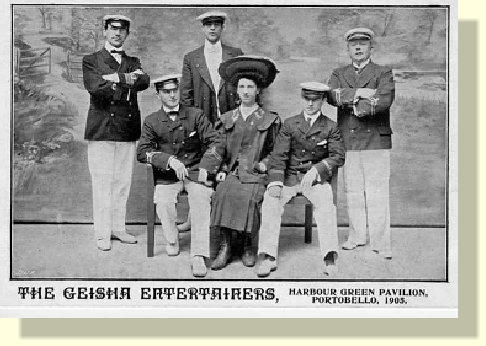
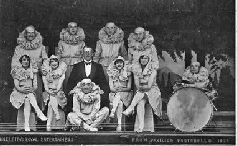
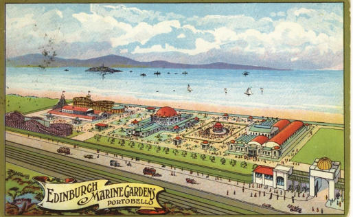
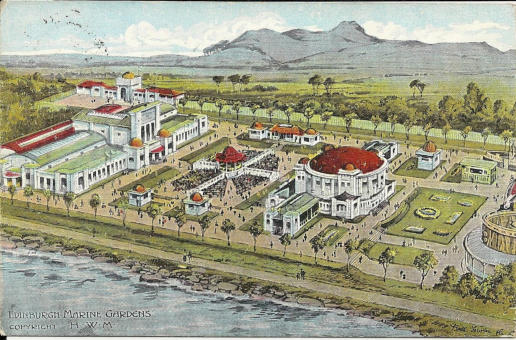
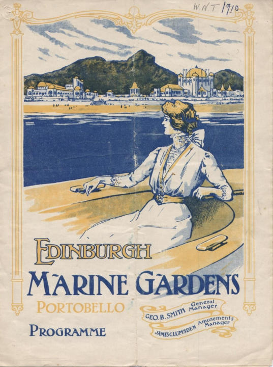
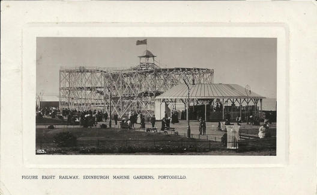
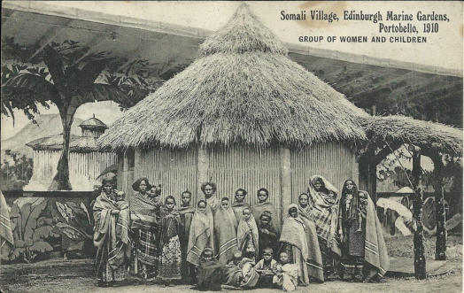
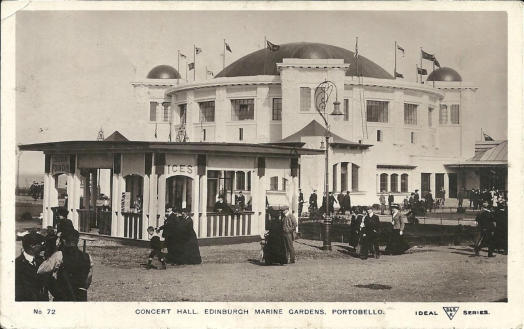
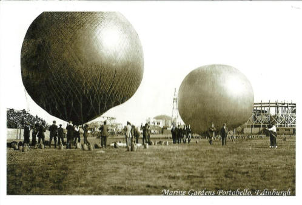
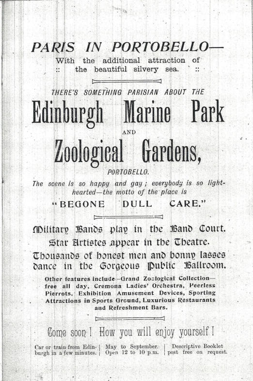

Portobello Heritage - Culture
Entertainment
That Was Entertainment

The building now housing Portobello Baptist Church was built primarily to be the Burgh Chambers and Town Hall for Portobello Council, but was designed also to fill the need for a suitable hall for public entertainment.The hall opened on 20th July 1863 with speeches and a dinner and staged its first public performance, a concert by the Edina Quartet, on 25th July. The Scotsman newspaper reported that a well selected programme was received with repeated rounds of applause from a crowded audience. On 22nd and 24th October 1864 there were appearances from the celebrated Scottish Vocalist Mr. Kennedy. Performances in the 1870s included concerts put on by the local temperance society. These sometimes had a riveting climax. Occasionally, variety was added to these gatherings by a half-hour's display of magic lantern slides. The tit-bit of each of these displays was a mechanical slide showing a man lying in bed and rats crawling over the bedclothes and disappearing into his open mouth.
There are also reports that the celebrated Tom Thumb drew large crowds for two nights in the 1870s and if this was General Tom Thumb, P. T. Barnum's star attraction, it would certainly have been a coup for the hall's owners. By that time Charles Edward Stratton, to give him his real name, had become the toast of America and Europe, had met Queen Victoria and was extremely wealthy. He had married, and lived in a large house in a fashionable area of New York so a two-night booking in Portobello seems unlikely. Exotic and unusual attractions seemed to have been popular as full houses were reported for appearances by The Aztecs and a troupe of Zulu warriors. By 1901 the Town Hall had added the magic of moving pictures to its programmes of live entertainment. On 7th March 1913 it opened as a fully-fledged picture house named the Cinema Theatre, but it is a bit unclear how long it operated as such until the building was bought by Portobello Baptist Church in 1919.
Blackpool may have enticed thousands of folk to its array of live shows, but for much of the last century Portobello was the summer show-business centre of Scotland. There were live attractions galore, and the town became a by-word for entertainment. It rejoiced in the tag of "Brighton of the North". Back in those halcyon days you could take an evening stroll by the Forth, breathe in the fresh health-giving air, and join the fun at many a breezy entertainment.

There was Harry Marvello's concert party, the Geisha Entertainers, who came to Portobello in 1905. Harry set up a stage and dressing rooms on the Harbour Green at the foot of Pipe Street and brought a company who had worked for him at Ayr the previous summer. It was the first time Portobello had seen such a large open-air show. Success for Marvello was instant, and within a few weeks he had to double his seating. His sister Alice Marvello was at the piano for a company that included Fred Smart, Arthur Roberts and Teddy Denham. The next summer Marvello bought the Tower Hotel on the Promenade, and in the garden in front built the Tower Pavilion, destined to be Portobello's first variety hall and hosting roller-skating and boxing before settling down as the Tower Amusements.Portobello also boasted concert parties and variety companies who took up residence for the summer and performed under cover in large marquees. One of the most popular of these was Andre Letta's Royal Entertainers, first in the Prom Pavilion and from 1921 in a large tented structure in Bath Street. One of his star turns was Dave Willis and among artistes who got an early opportunity with Letta were a young Ella Logan, Jimmy Logan's aunt, who went on to fame on Broadway and "Cavalier of Song" Donald Peers. Letta was a colourful character, always to be seen with a fresh flower in his buttonhole each day. Before turning to production he had been a celebrated conjuror and ventriloquist and was rightly proud of his Command Performances at Balmoral Castle. In his later years he acted as Father Christmas in an Edinburgh department store.
Along the Promenade in a marquee grandly named the Prom Palace another Scots comic held court in the 1930s. One of Glasgow's favourite sons, Tommy Morgan, regularly brought a top-class variety company for a summer season, which is not so surprising given Portobello's popularity as a holiday destination for the citizens of the west of Scotland. In an enthusiastic review of the opening night of the 1934 show, the local paper reported that expectations raised on account of this company having just completed successive weeks at the Glasgow Alhambra and Theatre Royal, Edinburgh, were more than realised. It is also worth remarking that the show is advertised as twice nightly with a nightly change of programme, not much respite for the cast in those days. Life was slightly less taxing for the cast of David Sharp's Optimists presenting a summer variety show for nine weeks from June to September 1936 in the new Town Hall, with popular comedian Jack Radcliffe topping the bill. There was only one performance each evening, with an entire change of programme on Mondays and Thursdays.
In 1913 a former roller skating rink in Bath Street was remodelled in Indian style and opened as the Bungalow Electric Theatre. It later was called simply the Bungalow but changed its name to the Victory in 1942, presumably for patriotic reasons, but closed its doors in May 1956. The County Cinema in Bath Street opened in March 1939 with a showing of Disney's Snow White and the Seven Dwarfs and was altogether more opulent and grander than the Bungalow/Victory. It was built in Art Deco style with a central tower outlined with neon tubes that changed colour. In 1954 it became the first cinema in the east of Scotland to have four-track stereophonic sound when it re-opened after reconstruction on 22nd November with a new name, the George. The building now is home to bingo after the last picture show on Saturday 15th June 1974. Portobello's third cinema closed in December 1961. This was the Central, which had opened as the New Picture House in 1914, but went through a number of name changes during its lifetime. Between 1915 and 1942 it was named the Central; from 1942 to 1954 it was the George, before reverting to Central for the rest of its existence. After failed spells as a nightclub and a restaurant, the building was converted into flats although retaining a cinema style frontage.
Portobello Pier
When Portobello Got its Pier

May 23, 1871, was a fantastic day in the history of Portobello. An enthusiastic crowd had assembled for the opening of the resort’s latest – and greatest – attraction: a promenade pier, 1250 feet long, with, at the seaward end, a substantial pierhead surmounted by an imposing pavilion. The new pier, with its restaurant, bar and bandstand was a pleasure pier, pure and simple.
The new pier was the first of its kind in Scotland and the occasion was graced by the civic dignitaries of Edinburgh, Leith and Musselburgh and, of course Portobello itself, which was then an independent burgh. It was a proud day too for Thomas Bouch, designer of the cast-iron pier who also contributed much of the capital of the Portobello Pier Company.While Portobello had enjoyed a period of prosperity as a “seaside watering place”, particularly since the arrival of the railway in 1844, the town, in the estimation of the more far-sighted inhabitants, was in danger of losing ground to rival resorts. Holidaymakers were looking for a greater variety of activities, and with promenade piers mushrooming south of the Border, a similar facility was a necessity for an ambitious resort like Portobello.But the prospect of the pier being opened to the public on the Sabbath roused a lot of ire. When the enabling act was still before parliament, Provost Wood of Portobello went to London to try to secure the Town council “a voice in the regulation of the times of opening and the manner of using the pier on Sundays.” The amendment sought by the Sabbatarians was, however, opposed by Lord Redesdale, the Chairman of committees for the House of Lords. Rejecting the protestations, his lordship expressed to Thomas Wood his opinion of the Portobello Sabbatarians. “You are a very peculiar people in Portobello,” he remarked, “to desire such a holy atmosphere.”Even after the work had been completed the Sabbatarians kept up the pressure. They complained that the pier company was “trading” on the Sunday, and this, they argued, would encourage others “to follow their occupations for gain on what should be a day of rest.” They further claimed that the resort had lost trade with families who had previously holidayed at Portobello going elsewhere “in consequence of the scenes of rioting and drunkenness which unfortunately abound the Sunday, and which render it unsafe for well-dressed females to appear on the streets without being exposed to insult.”The pier, nevertheless, was a very popular feature. Day-trippers flocked to Portobello from Edinburgh and roundabout. Saturday, July 8, 1871, for instance, saw 600 excursionists arrive by special train from Larkhall. Another 700 came from the iron towns of Newmains and Wishaw and 2000 spilled out of trains from Galashiels. The special holiday granted to mark the centenary of the birth of Sir Walter Scott brought a record number of excursions. Despite many counter-attractions marking the centenary, no fewer than 2500 people paid the one penny admittance charge to the pier that August day of 1871.Judging by the number of season tickets sold in the first three months of that first season (468 annual 292 monthly), many people must have been regular promenaders. Some went to bathe in the deep water at the pierhead and, to cater for their needs, the following season the pier company provided additional staging below the pier, with “canvas blinds” to protect the shivering swimmers from the snell east winds

Around that time, other water sports were coming into vogue, and the pier was just the spur needed by the sailing fraternity. A Regatta Club was formed, with the first meeting being held in the summer of 1871. It was an enormous success with a huge number of visitors paying for admission to the pier.Around that time, other water sports were coming into vogue, and the pier was just the spur needed by the sailing fraternity. A Regatta Club was formed, with the first meeting being held in the summer of 1871. It was an enormous success with a huge number of visitors paying for admission to the pier.

The boatmen who plied for hire found the pier a tremendous asset; previously, they had on occasion to stagger through surging seas carrying passengers on their backs! It was this kind of practice that Provost Wood referred to on the opening day, when he spoke of the people of the town having long felt “the necessity of some way of getting out to sea, to enable our friends to enjoy boating and fishing without discomfort.”Above all, the new pier meant that excursion steamers could now visit Portobello regularly. Getting out to sea in the paddle-steamers that plied the Forth became the highlight of a visit to good old Porty for many holidaymakers. But these could also be a hazard – in 1887 the “Tantallon Castle” collided with the pier causing severe damage. Although the vessel’s owners paid compensation, the accident was almost the last straw for the proprietors of the pier.In the long run the pier proved to be a financial failure, the bad winter weather of the Firth of Forth bringing heavy expenditure on repairs and alterations. However, the steam boat owners came to the rescue, agreeing in 1889 to pay an annual subsidy of £200. It seemed a good investment, as there were not too many piers on the Firth of Forth that were accessible at all stages of the tide. Two years later, in 1891, the shipping concerns bought the pier outright, paying £1500 – a fraction of the original cost.

With repair bills a constant drain on the company’s finances, the pier proved as great a burden on its new owners as it had on the old. Nevertheless, it continued in business until the First World War. The end came in 1917 when the winter gales wrought such destruction that the structure was declared unsafe. Soon after what remained was demolished.In the Twenties and Thirties proposals were brought forward for the construction of a replacement but the plans never got beyond the drawing board. Portobello’s promenade pier was the first and last to be built in Scotland.Although it had a chequered career, the pier built by Thomas Bouch had a comparatively long life – it certainly lasted a lot longer than the structure that was his masterpiece. Bouch was the engineer who constructed the first Tay Railway Bridge and was knighted by Queen Victoria for his achievement. While his railway bridge across the Tay stood for less than two years, the promenade pier at Portobello survived for 46 years.(An earlier version of this article appeared in the Edinburgh Evening News on 23 May 1971)
Eric Simpson
In 1933 Edinburgh Corporation announced ambitious plans for the construction of an open-air swimming pool and a new pier and Portobello architect, Mr Peter Jeffries made this proposal. His structure incorporated both elements and would have stretched between Bath Street and present-day Bellfield Street. Walkways across the Promenade from these streets led to the pier while another in the centre, at Marlborough Street [Wellington Street on the drawing], took swimmers to the pool. There would have been the usual entertainments at the end of the pier plus facilities for sailing.As Eric Simpson says the plan to build a new pier was dropped, although an open-air swimming pool did materialise a few years later, albeit in a different location.

Marine Gardens
Portobello Marine gardens

Opened in May 1909 by the Rt. Hon. Sir James Gibson M.P., Lord Provost of Edinburgh, the Marine Gardens covered around 30 acres of land stretching west from King’s Road to the Dog and Cat Home. This large amusement park was the brainchild of a group of businessmen who wished to re-use buildings from the highly successful Scottish National Exhibition, which had been held in Saughton Park, Edinburgh, in 1908. At the opening ceremony, the Chairman of the Directors of the Gardens, Ex-Bailie Moxon, said the Marine Gardens were the first in Scotland, although such amusement parks were numerous in America and on the Continent.

The gardens proved popular and three quarters of a million people visited the complex during the first year. They provided the public with a combination of indoor and outdoor amusements that could be enjoyed by rail passengers for 7d – this included a return fair from Edinburgh Waverley. The cost was normally 6d and for this a person got admission to the Gardens, a free seat in the onsite cinema and the Al Fresco theatre and free dancing in the Empress Ballroom, the main building in the grounds. For another 1d the customer could visit the Amusement Court.

Within the Amusement Court there were various attractions including the Royal Scenic Railway, which was about a mile long with a switchback three tiers high. People could also enjoy a trip on a joy wheel, go on a mountain slide, find their way through a maze or visit river caves.

Another attraction was the Somali Village, inhabited by seventy people from Somaliland who put on a display for visitors by fighting with spears.

Somali families were brought over to live in a mud-hut compound and ‘perform’ their daily lives for visitors. It has been suggested that performances were seen more as salaried work rather than coerced labour, with some village elders flying back and forth from Europe to Africa to manage various villages. The village remained popular until its closure just before the First World War, when its grounds were co-opted for war purposes. There is no record of what happened to the families.In the Concert Hall there were daily all-star variety shows with groups such as the Humoresks, the Enterpeans and the Dandies providing song, dance and comedy sketches.
In the Al Fresco Theatre the public could see Pierrots, concert parties and popular comedians such as Henry Farrow.

Visitors could also hear famous bands and musicians in the band court, or play a game of billiards in the billiard saloon where they might see T. Aitken, the Scottish champion. Another place to visit was the Industrial Hall, which housed exhibitions of items from Great Britain and abroad. There was also a sports area for football, and an ice-rink.
The full title of the amusement park was the Edinburgh Marine Gardens and Zoological Park. Within the gardens Bostock’s Zoo was responsible for showing a wide range of animals to the public. Two lion cubs, Wallace and Bruce, were born in the Gardens in 1911.

To encourage the public to continue to visit the Gardens new attractions always had to be organised. For example, on 22nd July 1912, the pioneer aviator Mr W.R. Evans displayed his flying machine in front of a large crowd
The advertisements below were placed in the Linlithgow Marches Official Programmes for 1911 and 1912. Clearly the gardens were under new management in 1911. The advert in 1912 suggests there was a Parisian atmosphere to be found. Interestingly both use the name Marine Park, rather than Gardens, with the 1912 advert adding Edinburgh to the title.

At the beginning of World War One, in 1914, the Marine Gardens closed and all the buildings apart from the Empress Ballroom, which provided billets for the troops, were demolished.
If you look closely at the postcard above you will see an ‘X’ marked on the card just above and to the left of the lady skater off-centre. This card was sent from Bill to Mrs Sharp in Leeds with the message “Dear Annie This is the room in which we sleep but you can only see about half of it in the picture. I have put a X over where I sleep…” Unfortunately, the stamp has been removed, taking with it the postmark.George Baird, who joined the 5th Royal Scots Territorials in 1910, was billeted there. He remembers that “The battalion mustered in the Moray Maltings, off London Road, in August 1914; from there we went to Redford Barracks; then to Craiglockhart School and, finally, to the Marine Gardens, the Ballroom …”. According to Baird several other places in the Gardens were used as sleeping quarters for the other ranks. Baird and his comrades remained there until 10th March 1915 when the Band of the 9th Royal Scots played them to Portobello Station. They left at 10.35pm for an unknown destination and eventually landed on the Dardanelles on 25th April 1915.The Marine Gardens re-opened at the end of the war but on a very limited scale. The Ballroom was refurbished and proved very popular up until 1939. Big-name dance bands such as Harry Roy, Ambrose and Roy Fox played there as well as the popular resident bands. It was also home to the roller-skating club. The only other part to re-open was the sports stadium, which was used for football, motorcycle speedway and greyhound racing.The Second World War meant the closure of the Marine Gardens for the second and final time, when it was again commandeered for war work. However, as late as 1963 the Ballroom was still standing and was being used as a maintenance depot for buses belonging to the Scottish Motor Traction Company. No evidence now exists of the Marine Gardens. There is currently a Lothian Buses depot and garage and various car showrooms on the land.